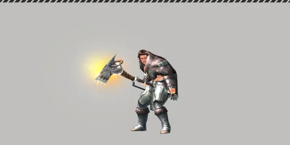

Home › Progression
Organizations Live
Do missions and support requests for organizations to raise Trust, earn T-Stones and titles, modify equipment with Tech Support, and run personal research
Some sections on this page are not ready yet
Durango has several organizations that stay in touch with pioneers by radio. Working for an organization raises your Trust (friendship) with it. When your Trust levels up you get T-Stones, titles and access to higher support-request tiers.
What you can do
- Take missions at a camp Communication Center. Finishing one gives T-Stones, EXP and Trust
- Use Request Support to pay T-Stones for materials or tools, and gain Trust too
- Modify equipment, then use Tech Support to re-roll the modification
- Run personal research in your own labs for a 30-minute buff
All organizations Live
| Organization | Missions / support requests |
|---|---|
| Chlorophyll Forum | Yes |
| Frontier Coalition | Yes |
| The Company | Yes |
| The Committee | Yes |
| Radio University | Not yet |
| The Lifeline | Not yet |
| Personal Radio Signal | Not yet |
All organizations appear on the organization page. The Career Guide button on the skill page also depends on this list.
Trust levels Live
These apply to the 4 main organizations. The maximum is Lv.11.
| Level | Total points | T-Stones on reaching | Title |
|---|---|---|---|
| 1 | 0 | – | – |
| 2 | 50 | 500 | ✓ |
| 3 | 130 | 1,000 | |
| 4 | 520 | 1,500 | |
| 5 | 1,150 | 2,000 | ✓ |
| 6 | 2,850 | 2,500 | |
| 7 | 5,600 | 3,000 | |
| 8 | 11,830 | 3,500 | ✓ |
| 9 | 21,910 | 4,000 | |
| 10 | 45,210 | 4,500 | |
| 11 | 70,810 | 5,000 | ✓ |
Going from Lv.1 to Lv.11 gives 27,500 T-Stones per organization. See Titles for the title names.
Missions Live
Where: the Communication Center in a camp. For delivery missions, bring the items to the camp's Storage.
- There are 44 missions, 11 per organization
- You can hold 1 mission per organization (4 at most)
- Goals vary: deliver, craft, build, hunt, gather, explore and tame. Some missions have several goals
- Harder missions need a higher character level or Trust level
| Reward per mission | Range |
|---|---|
| Trust | 8–55 |
| T-Stones | 200–3,200 |
| EXP | 30–450 × the Index multiplier of the island you stand on when you finish |
| Island Index | 1 | 2 | 3 | 4 | 5 | 6 | 7 | 8 | 9 | 10 |
|---|---|---|---|---|---|---|---|---|---|---|
| EXP multiplier | ×1 | ×2.2 | ×4.5 | ×6.3 | ×9.1 | ×11.4 | ×14.4 | ×17.6 | ×21.1 | ×24.7 |
First-mission bonus: the first mission you finish gives an extra 500 T-Stones + 100 EXP + 5 Trust to that organization. It becomes available again 22 hours after you claim it.
Cancel: allowed any time with no point loss, but you then wait for a new mission based on your character level.
| Character level | Wait for a new mission (after finishing or cancelling) |
|---|---|
| 1–14 | None |
| 15–19 | 30 seconds |
| 20–24 | 7 minutes |
| 25–29 | 15 minutes |
| 30 and up | 30 minutes |
Shuffle: re-roll a mission you have not accepted yet. You have 3 charges and get 1 back every 30 minutes.
Request Support Live
Pay T-Stones to request goods from an organization. You get the items right away, plus 1 random extra item, plus Trust.
- There are 10 tiers. The tiers you can use match your Trust level with that organization (tier 1 works from 0 points)
- Each organization has 3 requests per tier. Across all organizations there are 53 kinds of request
- Items you receive are level 1
| Tier | Cost (T-Stones) | Trust | Example goods |
|---|---|---|---|
| 1 | 200 | +5 | Basic food ingredients |
| 2 | 300 | +8 | Animal hides |
| 3 | 450 | +11 | Basic crafting parts |
| 4 | 680 | +14 | Dried leather |
| 5 | 1,010 | +17 | Stone/bone gathering tools |
| 6 | 1,520 | +20 | Skilled crafting parts |
| 7 | 2,280 | +23 | Metal consumables |
| 8 | 3,420 | +26 | Spices |
| 9 | 5,130 | +29 | Metal gathering tools |
| 10 | 7,690 | +32 | Advanced metal consumables |
- Each request can be used 3 times per week. The count resets every Tuesday at 22:00 Thai time (UTC+7)
- After a request, that organization rests for 30 minutes before the next one
Equipment modification and Tech Support Live
Modification adds special stats to equipment (shoes, weapons, bags, gloves, hats, tools, clothes). Each item has 1 slot.
First modification: craft a modification recipe at a workbench, using the item as an ingredient. The stats are rolled into the slot right away. There are 22 modification recipes. Some come from Tailoring and Weapon/Tool skills (Skills). Some recipes also add a penalty, such as lower max energy.
Tech Support: use it at a Personal Communication Center or a camp Communication Center to re-roll the slot.
- Request an estimate. You see the result before you commit. You can lock stats you want to keep (at least 1 stat must stay unlocked)
- Apply. Pay the recipe's materials again plus energy, and you get exactly what the estimate showed. The item can then no longer be listed on the market
- Reset the slot if you want to start over. It costs 50 T-Stones
| Estimate | Value |
|---|---|
| First estimate | 2,000 T-Stones |
| Each following estimate | ×1.1 per estimate, up to 13,454 (from the 21st on) |
| Locking | Price × (1 + number of locked stats) |
| Estimate lifetime | 30 minutes |
| Counter resets | After applying or resetting the slot |
| Rarity of a rolled stat | Chance |
|---|---|
| Normal | 85% |
| Rare ★★ | 13% |
| Super Rare ★★★ | 2% |

Personal research Live
Build a Life Lab, Light Tech Lab or Medium Tech Lab, then pay T-Stones to research. You get a buff right away that lasts 30 minutes. For example, butchering research raises your butchering ability.
| Research tier | Cost (T-Stones) |
|---|---|
| 1 | 2,000 |
| 2 | 5,000 |
| 3 | 10,000 |
| 4 | 20,000 |
- There are 80 research options
- Each lab type holds 1 buff at a time. Starting a new research replaces the old one
- The lab's number sets the highest research tier it can run
Not finished yet Not ready
- Radio University, The Lifeline and Personal Radio Signal have no missions or requests yet, so you cannot raise Trust with them
- Personal research is not tied to your real pioneer grade yet. Tiers 3–4 cannot be unlocked for now
- The Trust level-up message shows the organization's name twice